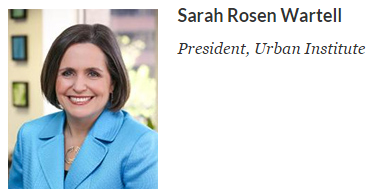

Use this editorial style guide when drafting or editing Urban Institute research publications. Guidelines are based on the Chicago Manual of Style and best practices for academic research writing. If you have questions or feedback on style decisions, please contact Editorial Services and Publications.
This edition of the Urban editorial style guide covers a lot more ground than the slim volume of guidance the Office of Publications printed a decade ago. A new Urban Names and Terms section references the Urban brand and defines the Urban acronyms that pepper our conversations. The A–Z revisits some earlier style decisions and introduces or expands on others. The Documentation section explains how to cite web-based content, including Urban's digital features, policy debates, and data visualizations.
One topic this edition doesn't address is terms for racial, ethnic, tribal, and other groups. The Diversity and Inclusion Steering Committee is working with COMM's editorial, strategic communications, and external affairs teams on guidance for using language that is respectful and inclusive, avoids perpetuation of stereotypes, acknowledges relevant historical and social contexts, and engages diverse audiences. This work goes far beyond word choices and includes development of inclusive, culturally competent research and communication processes.
Our name appears in branded text (logos, decorative footers in documents, and so on), as “Urban Institute.” In run-in text (aka, regular paragraphs), you may use either “Urban Institute” or “the Urban Institute” (no need to capitalize “the”), but please use one consistently in each document.
Our accepted nickname/shortened name, “Urban,” may be used after our full name has been used. Our disclaimer language includes an example:
The views expressed are those of the authors and should not be attributed to the Urban Institute, its trustees, or its funders. Funders do not determine research findings or the insights and recommendations of Urban experts.
“UI” is no longer considered acceptable shorthand because it is commonly used for other terms (e.g., unemployment insurance, user interface).
Center on Nonprofits and Philanthropy (CNP)
Executive Office Research (EOR)
Health Policy Center (HPC)
Housing Finance Policy Center (HFPC)
Income and Benefits Policy Center (IBP)
Center on International Development and Governance (IDG)
Justice Policy Center (JPC)
Center on Labor, Human Services, and Population (LHP)
Metropolitan Housing and Communities Policy Center (Metro)
Policy Advisory Group (PAG)
Statistical Methods Group (SMG)
Urban-Brookings Tax Policy Center (Tax Policy Center, TPC)
Set in title caps, roman. “Initiative” should appear, lowercased, after the name, unless the name includes “Initiative” or “Program.”
Beyond High School: Education and Training
Inequality and Mobility
Kids in Context
Low-Income Working Families (LIWF)
Neighborhoods and Youth Development
Opportunity and Ownership (O+O)
Performance Measurement and Management
Program on Immigrants and Immigration
Program on Retirement Policy (PRP)
Social Determinants of Health
State and Local Finance Initiative (SLFI)
Tax Policy and Charities
Washington, DC, Research Initiative
Evidence-Based Policymaking Collaborative (EBPC)
Pay for Success Initiative (PFSI)
US Partnership on Mobility from Poverty
DYNASIM |
Dynamic Simulation of Income Model |
HIPSM |
Health Insurance Policy Simulation Model |
NSAF |
National Survey of America’s Families |
TRIM3 |
Transfer Income Model, version 3 |
Capitalize in standalone text and before a name, lowercase after a name (except proper nouns).
center director
director of economic policy initiatives/urban policy initiatives
Institute fellow
research assistant
research associate
Richard B. Fisher chair (currently held by Gene Steuerle)
senior fellow
senior research associate
vice president for communications/development, etc.
Sarah Rosen Wartell (not Sarah Wartell)
Margery Austin Turner or Margery Turner (not Marge Turner)
000 | A | B | C | D | E | F | G | H | I | J | K | L | M | N | O | P | Q | R | S | T | U | V | W | X | Y | Z
(See also Chicago Manual of Style, Chapter 7; and Merriam Webster’s Collegiate Dictionary [10th edition].)
9/11 [or September 11th]
24/7
academic degrees
MA, MPP
PhD
JD, MD
acute care [no hyphen]
administration, Obama administration
after-school [unit modifier]
amendment, Boren amendment
amid [not amidst]
among [not amongst]
and [not “&,” unless it is part of an organization’s formal name]
anti-
antipoverty
antiviral
but anti-redlining
appendix A
assembly, state assembly
at-risk population(s)
baby boomers [not Baby Boomers]
benefited, benefiting
Bible/Rust/Sun Belt
Bills: H.R. 1863, S. 793
bipartisan
birthrate
birth weight [noun], birth-weight [unit modifier]
black-white gap [not black/white gap]—see Formatting and Punctuation guidelines
Career Centers
caregiver
carve-outs, carve-out services
caseworker
cash flow
Census [when referring to a particular year: the 1990 Census], census [when using the term more generically: census data, census questions]
certificate-of-need [unit modifier]
checkup [noun], check up [verb]
child care [no hyphen]
co-
coauthor [noun; avoid using as a verb]
cochair
coeditor
coleader but co-led
colocate
coparent
copayment
coprincipal (investigator)
coworker
cowriter
but co-occur, co-occurence
colons—see Formatting and Punctuation guidelines
commas—see Formatting and Punctuation guidelines
Commonwealth of Virginia (of Massachusetts)
comprehensive-plan HMOs
Congress, congressional
correlate with [not to]
cost-containment [unit modifier]
counter-
countercurrent
counterculture
cross-
cross-cultural
cross-rating
cross-subsidies
cross-tabulation
but cross-cutting
cutoff [noun, unit modifier], cut off [verb]
cybersecurity
data [plural]
The data are updated annually
database, dataset
day care [noun, unit modifier]
death rate
decisionmaker, decisionmaking [noun, unit modifier]
delinking
dot-com
down payment
downside
dual-generation strategies
e.g., [use in parentheses and tables—use “for example” in text.] Do not italicize.
e-mail
et al. [use in parentheses, tables, and citations, but not in text—use “and others” or “and colleagues.”] Do not italicize.
etc. [use in parentheses and tables, but not in text—use “and so on.”] Do not italicize.
families who... [not that...]
fax [lowercase; shortened form of facsimile]
federal [lowercase in all uses except as part of a formal name: He works for the Federal Housing Administration. This is a federal matter.]
federal poverty guidelines/level/thresholds
Urban style recommends using federal poverty level (FPL) when writing about poverty generally and to a broad audience. Federal poverty guidelines and federal poverty thresholds are better suited to more technical writing, where such precision is important. Avoid using such phrases as “50 percent of poverty”; use “50 percent of the federal poverty level,” or “50 percent of FPL,” or “50 percent of the poverty level.”
fee-for-service
fieldwork
figure 1
fine-tune
first-time [unit modifier]
firsthand
focused, focusing
Food Stamp program, food stamps [Food Stamps as a program]
fourth-lowest [unit modifier]
free and reduced-price meals/breakfast/lunch
frontline
full-
full-time [hyphenated as an adjective: a full-time worker; open as an adverb: she works full time]
full-length
fundraiser, fundraising
general-fund expenditures [hyphenated to avoid ambiguity]
generation X/Y, gen Xer
geo-code, geo-coding
Gini coefficient
Governor Christie, the governor
grade point average
grassroots [adjective]
Great Recession
health care [noun, unit modifier]
high-
high-risk [unit modifier]
high-class
high-level
a historical study [not an historical study], a hotel
home- and community-based waivers, services
homebuyer
home health [no hyphen]
homeowner, homeownership
homeowners policy [no apostrophe]
House [US House of Representatives], state house
i.e., [use in parentheses and tables, but not in text—use “that is.”] Do not italicize.
initials
use a space between two initials: T. S. Eliot
in-migrant, in-migration
inner city [noun], inner-city [unit modifier]
the problems of the inner city, inner-city problems
inpatient
insurance seekers
inter-
interagency
interneighborhood
interrelated
Internet [capitalize]
jump-start
kick-start
large-group [unit modifier]
last-resort [unit modifier]
laws: Pub. L. No. 104-193
legislature, state legislature
lifestyle
limited English proficient
lists—see Formatting and Punctuation guidelines
long-standing
long term [noun], long-term [unit modifier]
low-
low-birth-weight [unit modifier]
low-income [unit modifier]
low–down payment [unit modifier; low modifies the compound noun down payment]
but very low income
lower-
lower-income [unit modifier], lower income [noun]
lump-sum [unit modifier]
managed care [noun], managed-care [unit modifier]
markup [noun], mark up [transitive verb]
Marketplace [when referring to the state and federal markets created by the ACA]
media [plural]
The news media are reporting it.
Medicaid wraparound
meta-
metadata
meta-analyses
Metro lines and stations
Red line train
Foggy Bottom station
millennials
minority-occupied [unit modifier]
multi-
multidimensional
multifaceted
multiyear
(but multi-tiered)
N [the entire dataset]
n [subset of the dataset]
near-poor
non-
nonarts
nonbank
noncash
noncompliant, noncompliance
nonelderly
nonprofit
nonresponse
nonwelfare
non-Hispanic
non-Medicaid
number-one priority [not #1 priority; also try first priority]
nursing care [no hyphen]
nursing home [no hyphen]
ongoing
online
on-site [adjective], on site [adverb]
The program offers on-site technical support; the program offers technical support on site.
out-migrate, out-migration
outpatient
over-
overexposed
overrated
p value
part-time [hyphenated when used as an adjective: a part-time worker; open when used as an adverb: he works part time]
pass-through [unit modifier]
payer [not payor]
pay for success [lowercase, no hyphens when used as an adjective]
Pell grant
percent versus percentage—see Numbers
per capita [unit modifier]
phaseout [noun] phase out [verb]
policymaker, policymaking [noun, unit modifier]
post-
postdoctoral
postreform
postwar
pre-
preempt
preexisting
prekindergarten [pre-K in tables]
prerelease
pretax
but pre-judicial [as in before an official hearing]
primary care
private-sector [unit modifier]
probability-level notes
Promise Neighborhoods program
pro rata [unit modifier]
quasi- [adjective forms]
quasi-public
quasi-judicial
quasi- [noun forms]
quasi corporation
randomized controlled trials [not randomized control trials]
rate-setting [unit modifier]
re-
recertify
reedit
reenroll
reentry
reestimate
reexamine
reoccur
reregulate
resubmit
reunify
but re-create (create again), re-sent (sent again)
résumé
risk-adjustment [unit modifier]
road map
safety net [noun, unit modifier] social service safety net
School-to-Work program
Section 1115 (or 1915) waiver, an 1115 waiver
self-
self-assessment
self-conscious
self-insured
semi-
semiannual
semiconductor
Senate [US Senate], state senate
sizable
slowdown [noun]
small-employer [unit modifier]
small-group [unit modifier]
Social Security [Administration, benefits, number]
socio-
sociocultural
sociodemographic
socioeconomic
socioemotional
sociohistorical
start-up [noun], start up [verb]
state-administered, state-funded [unit modifier]
state insurance commissioner
state-only program
stop-loss
sub-
subcontractor
subbasement
systemwide
table 1
tax-exempt [unit modifier]
taxpayer
third-party [unit modifier]
time frame
timeline
toll-free [unit modifier]
toolkit
toward [not towards]
trade-off [noun], trade off [verb]
traveled, traveling
t-tests
under-65 [unit modifier]
underreported
under way [adverb]
The program is under way
up-front [adjective], up front [adverb]
up-front costs; costs paid up front
US
US jobs; jobs in the United States
versus (vs.)
wait-list [verb], waiting list [noun]
War on Poverty, War on Drugs
Ward 8, Wards 7 and 8, ward-specific data
web page
website
welfare leavers, welfare stayers
work-first [unit modifier]
workforce
workers compensation [noun]
worldview
World Wide Web
wraparound [unit modifier]
Xerox [brand name; preferred term is photocopy]
zip code
Use an acronym only if the term it stands for appears five or more times in the publication. Define acronyms in the executive summary and in the main body of the text. Once an acronym has been defined, it can be used interchangeably with its definition to avoid excessive repetition or awkward constructions (e.g., an acronym as the first word in a sentence or a paragraph).
ACA |
Patient Protection and Affordable Care Act |
ACS |
American Community Survey |
AGI | adjusted gross income |
ARRA | American Recovery and Reinvestment Act of 2009 |
ATRA | American Taxpayer Relief Act of 2012 |
BLS | Bureau of Labor Statistics |
CBO | Congressional Budget Office |
CCDBG | Child Care and Development Block Grant |
CCDF | Child Care and Development Fund |
CDBG | Community Development Block Grant |
CDC | community development corporation |
CDFI | community development financial institution |
CFPB | Consumer Financial Protection Bureau |
CHIP | Children’s Health Insurance Program (called SCHIP, or the State Children's Health Insurance Program, from 1997 to 2009) |
CMS | Centers for Medicare and Medicaid Services |
COLA | cost-of-living adjustment |
CPI | consumer price index |
CPS | Current Population Survey |
CPS ASEC | Current Population Survey Annual Social and Economic Supplement |
CRA | Community Reinvestment Act |
EA | Emergency Assistance |
EITC | earned income tax credit |
FHLMC | Federal Home Loan Mortgage Corporation (better known as Freddie Mac) |
FNMA | Federal National Mortgage Association (better known as Fannie Mae) |
FPL | federal poverty level |
GA | General Assistance |
HHS | Department of Health and Human Services |
HMDA | Home Mortgage Disclosure Act |
JOBS | Job Opportunities and Basic Skills Training Program |
LISC | Local Initiatives Support Corporation |
MAGI | modified adjusted gross income |
MSA | metropolitan statistical area |
NIH | National Institutes of Health |
NIJ | National Institute of Justice |
OASDI | Old-Age, Survivors, and Disability Insurance |
OPM | Office of Personnel Management |
PFS | pay for success |
PRWORA | Personal Responsibility and Work Opportunity Reconciliation Act of 1996 |
PHA(s) | public housing agency (agencies) |
PTSD | post-traumatic stress disorder |
SSBG | Social Services Block Grant |
SIPP | Survey of Income and Program Participation |
SSI | Supplemental Security Income |
SNAP | Supplemental Nutrition Assistance Program (formerly the Food Stamp Program) |
TANF | Temporary Assistance for Needy Families (formerly Aid to Families with Dependent Children, or AFDC) |
UI | unemployment insurance |
WIA | Workforce Investment Act |
WIC | Special Supplemental Nutrition Program for Women, Infants, and Children |
Colons are used only after a phrase that functions as a complete sentence, not merely to indicate the presence of a list (e.g., Several vulnerable groups will be affected: infants, single mothers, and those with incomes below 200 percent of FPL). [Incorrect: The survey covers: Michigan, Wisconsin, and Indiana.]
Commas are used between clauses separated by conjunctions unless the clauses are short or closely related.
Use commas around parenthetical elements or nonrestrictive clauses.
Serial comma (also known as the Oxford comma): Three or more items in a list should be separated by commas:
decisionmakers, policymakers, and the general public.
En dashes (–) are used mainly to connect number ranges: 1997–2001. En dashes should not be used if “from” precedes the first number (from 2:00–4:00); use “to” instead (from 2:00 to 4:00).
En dashes are also used when a prefix applies to both parts of a compound adjective (post–welfare reform eligibility rules) or when one part of a compound adjective is itself an open compound or proper noun (Donald Trump–style rhetoric).
Em dashes (—) are used to indicate sudden breaks in thought: I sent the draft to the funder last Friday—or was it Thursday?
Em dashes are also used to set off an explanation or expansion, in place of parentheses: Four states—Alabama, Alaska, New Mexico, and West Virginia—had December unemployment rates above 6.0 percent.
Em dashes can also be used, sparingly, to indicate emphasis: The $384 billion to support asset development in 2013 primarily benefited higher-income families—exacerbating wealth inequality and racial wealth disparities. This usage is more appropriate for blog posts and website content than for research products.
Following Chicago 6.103–109, a slash (/) most commonly signifies alternatives. In certain contexts, it is a convenient (if somewhat informal) shorthand for or.
he/she; his/her; and/or
Use a space between two initials: T. S. Eliot
Run short lists into text. If list items are simple, no lettering or numbering is necessary. If list items are complex, or if you plan to refer to items by their place in the list, use numbers:
(1), (2), (3), [not (a), (b), (c)].
If the list is long, set as excerpt.
The punctuation and capitalization of lists depends on whether the list items are complete sentences and whether the list is introduced by a complete sentence.
Example 1: the list is introduced by a complete sentence, and each list item is a complete sentence.
These and other findings informed a set of principles that guided task force deliberations:
In this example, the list items start with a capital letter and end with a period. The introductory sentence ends with a colon, but it could also end with a period.
Example 2: the list is introduced by an incomplete sentence, and each list item is a complete sentence.
Between 1985 and 2014,
In this example, the list items are finishing the sentence that starts with “Between 1985 and 2014,” and are capitalized and punctuated accordingly. If the list items have internal punctuation—for example, if the first bullet were “convictions nearly doubled from 40,924 to 76,835, an increase of X percent”—then every list item except the last would end with a semicolon instead of a comma.
Example 3: the list is introduced by a complete sentence, and each list item is an incomplete sentence. Here, list items are lowercased and have no punctuation at the end.
Your application must include the following documents:
To make punctuation and capitalization of lists consistent throughout a document, write all lists using the same grammatical structure.
Capitalize common nouns such as party, river, street, and west when they are an integral part of the full name for a place or thing, even in plural uses.
Democratic Party; Mississippi River; West Texas
Democratic and Republican Parties; Main and State Streets
Terms that denote regions of the world or of a particular country are often capitalized, as are a few of the adjectives and nouns derived from such terms.
the Eastern Seaboard, East Coast; east, eastern, eastward (directions)
the Great Plains
the Midwest, midwestern, a midwesterner
the North, northern, a northerner
Set case names, including the “v.,” roman in notes (short forms in subsequent citations are italicized). Case names mentioned in running text are italicized.
The Supreme Court announced its decision in the King v. Burwell case in June 2015.
Less than a day after hearing oral arguments, the Supreme Court issues its decision in Bush v. Gore.
Use the full name, including the US, on first usage:
US Department of Agriculture/Commerce/Justice
Preferred shorthand are the acronyms, which can be introduced in parentheses at the end of the full name:
US Department of Agriculture (USDA), US Department of Transportation (DOT)
Avoid inside-the-Beltway shorthands like “State,” “Commerce,” and “Labor,” which could be read as concepts rather than names. Exceptions to this rule are “Treasury,” which can't be shortened to DOT, and “Homeland Security” and “Veterans Affairs,” which are more easily recognizable as names.
Capitalize formal titles when used immediately before a name, but not after:
President Sarah Rosen Wartell; Sarah Rosen Wartell, president of the Urban Institute, is a public policy executive and housing markets expert.
Senator Orrin Hatch; Senator Hatch; Orrin Hatch, the senior senator from Utah.
Capitalize formal titles when not run into text, such as when they appear next to a photo on an author page.
Washington, DC; use postal state abbreviations (MD, VA) except in formal addresses. [See Chicago Manual of Style 14.17.]
Chicago has more than 50 rules on this topic, and it's difficult to know which rule takes precedence when. Urban editors follow these general rules.
The rest of this section lists examples for particular kinds of numbers.
children ages 2 to/through 6, 9 to/through 15 (not aged 2–6), between the ages of 9 and 15
24 years old, 11 months old, a 34-year-old woman, a 5-year-old
Try to avoid such constructions as “age 0–5”; use “from birth to age 5” instead.
More general terms (“in his thirties”) are allowed, but consider context (e.g., blog post or web feature versus scholarly report).
1994–95
1990s (use an “s” without an apostrophe to indicate spans of decades or centuries), the sixties
October 6, 1993; October 1993; April 17 (not April 17th)
FY 1995, FY 1997–99, FY 1999–2001
20th century
shorthand for important events: 9/11
Simple fractions are spelled out and hyphenated (see Fractions below). Large or complex fractions are expressed as decimal fractions.
two-thirds
0.79
0.22
Always place a zero before the decimal to improve readability. This is particularly important if numbers greater than 1.00 appear in the same context.
The federal interest rate increased from 0.88 to 1.12 percent.
This is also true of scientific values, even when quantities can only logically equal 1.00 or less, such as in probabilities, correlation coefficients, and so on.
A mean of 0.83
A ratio of 0.85
p < 0.05
R = 0.10
A zero is customarily omitted in special circumstances where it would be illogical, such as firearm calibers.
“The suspect is armed with a .38 pistol.”
Hyphenate as both adjective and noun:
a two-thirds majority; two-thirds of those present
One-quarter is generally preferred to one-fourth, but treat similar fractions similarly:
One-fourth of students and one-fifth of teachers in County X are male.
Spell out one through nine, but treat low and high numbers similarly:
grades one through five; grades 9–12; grades 1–12
The same rule applies to ordinals:
first grade; 10th grade; from 8th to 12th grade
2,000 (use comma)
5 million (not 5,000,000)
5 billion (not 5,000,000,000)
$10 [not 10 dollars]
$5 million [not 5 million dollars]
Currency with dates and countries: $(2012)45,000; US$45,000; US$(2012)45,000
“Percent” is one word.
As an adverb (meaning “of one hundred”), percent cannot be the subject of a sentence. Percentage is a noun. (To avoid repetition, try “share” or “rate” instead.)
9 percent (spell out “percent,” even in parentheses; use numeral before the word “percent”)
15 to 20 percent (in text) [not 15 percent to 20 percent]
Within a table, % can stand for either percent or percentage
For ranges in tables and figures, be sure that the numbers given cover all possibilities within the range and that none of the ranges overlap.
When displaying these ranges, there is no need to repeat the symbols:
5–10%
$6–8 million
Within text, it is not always necessary to repeat “million” for ranges, but consider the context. For something like, “the program will cost $5 to $8 million,” repeating the million is probably not necessary if the program could not possibly cost just $5. However, if the text has been jumping in ranges, from hundreds to thousands to millions, then it is probably best to repeat the “million.”
Minor punctuation and capitalization changes are generally allowed to make a quotation fit into the syntax of the surrounding text. These changes include capitalizing (or lowercasing) the first letter of the quote and changing double quotation marks to single (or vice versa).
An ellipsis may be used at the beginning or end of a quotation to indicate that the person being quoted hesitates before speaking or does not complete his or her thought. It should not be used merely to indicate that other words precede and follow the quotation in its original context.
Set off material of a hundred words or more.
If italics have been added, specify; [Jones 1996, emphasis added].
If paragraphs occur within a continuous block, the first paragraph should have no indent, but subsequent paragraphs should be marked by indents rather than extra leading.
Per Chicago 10.28: “Material set off from the text as a block quotation is not enclosed in quotation marks. When a quotation that is run into the text in the typescript is converted to a block quotation, the quotation marks enclosing it are dropped, and interior quotation marks are changed accordingly.”
Do not use initial ellipses.
Use brackets to indicate missing or illegible words or to clarify an ambiguity. In the latter case, use the bracketed text instead of, not in addition to, the ambiguous word(s): [the nurse] said; not she [the nurse] said
The Urban Institute uses parenthetical author-date citations and a corresponding reference list in its research publications. Each entry in the reference list is mentioned in the text, and all works cited in the text should appear in the reference list. Works not cited in the text may appear in a list of additional readings, but they should not be included in the formal reference list.
Notes: blog posts, legal citations, magazine articles (print or online), newspaper articles (print or online), personal communications (e-mails, interviews, etc.), press releases, web pages and other website content, and other informally published work (i.e., work without an easily identifiable author, publication date, city of publication, or publisher).
Reference lists: books, chapters in books, dissertations/theses, journal articles, papers or presentations from meetings, PDFs posted on websites, research briefs and papers, testimonies, and working papers.
Note: In the interest of shorter reference lists, URLs for PDFs posted on websites may be embedded under the publication title in reference lists.
The primary reference guide for Urban Institute publications is the Chicago Manual of Style, 16th edition (2010), figure 15.1, with some variations.
Reference lists should be arranged according to the following guidelines:
The entire debate:
One post in the debate:
Rueben, Kim, Sarah Gault, and Sandy Baum. 2016. “Strengthening Federal Student Aid: A Closer Look at Pell Formulas with Two Inputs.” Washington, DC: Urban Institute.
Koulish, Jeremy. 2015. From Camps to Campaign Funds: The History, Anatomy, and Activities of 501(c)(4) Organizations. Washington, DC: Urban Institute.
A standard reference entry for a book should contain the following information:
Author, First, Second Author, and Third Author. Year of Publication. Book Title Italicized. City of Publication, STATE (two-letter) or COUNTRY (three-letter) abbreviation: Publisher.
If the city of publication is a major US city (e.g., Baltimore, Boston, Chicago, Dallas, Los Angeles, New York, San Francisco, and Salt Lake City) or a major international city or capital (London, Paris, Tokyo, etc., as well as Sydney and Geneva), the state or country abbreviation may be omitted. This is also true if the publisher’s name contains the state (Albany: State University of New York Press).
Additional information (editor or editors, page numbers, edition, etc.) should be supplied as needed. See examples below.
Single author: Burman, Leonard E. 1999. The Labyrinth of Capital Gains Tax Policy: A Guide for the Perplexed. Washington, DC: Brookings Institution Press.
Multiple authors: Burman, Leonard E., and Joel Slemrod. 2012. Taxes in America: What Everyone Needs to Know. New York: Oxford University Press.
Editor(s) in place of author: Peters, H. Elizabeth, and Clair Kamp Dush, eds. 2009. Marriage and Family: Perspectives and Complexities. New York: Columbia University Press.
Chapter in an edited book: Boris, Elizabeth T., and C. Eugene Steuerle. 2006. “Scope and Dimensions of the Nonprofit Sector.” In The Nonprofit Sector: A Research Handbook, 2nd ed., edited by Walter W. Powell and Richard Steinberg, 66–88. New Haven CT: Yale University Press.
Urban Institute Press book: Cordes, Joseph J., and C. Eugene Steuerle. 2008. Nonprofits and Business. Washington, DC: Urban Insitute Press.
One volume in multivolume work: Fryer, Roland G., Jr. 2011. “Racial Inequality in the 21st Century: The Declining Significance of Discrimination.” In Handbook of Labor Economics, vol. 4, edited by Orley Ashenfelter and David Card, 855–972. New York: North Holland.
Numbered edition: Halpern, Diane F. 2012. Sex Differences in Cognitive Abilities. 4th ed. New York: Psychology Press.
Report (with abbreviated in-text citation): CBO (Congressional Budget Office). 2013. Rising Demand for Long-Term Services and Supports for Elderly People. Washington, DC: CBO.
Report (with a report number): Bracmort, Kelsi. 2013. Wildfire Management: Federal Funding and Related Statistics. Report R43077. Washington, DC: Congressional Research Service.
Working paper: Murray, Sheila, and Kim Rueben. 2007. “School Finance over Time: How Changing Structures Affect Support for K–12 Education.” Policy Working Paper WP07SM1. Cambridge, MA: Lincoln Institute of Land Policy.
Brief (with abbreviated in-text citation): GAO (US Government Accountability Office). 2014. “State and Local Governments’ Fiscal Outlook.” Washington, DC: GAO.
Brief: Bloom, Howard, Larry Orr, George Cave, Stephen H. Bell, and Fred Doolittle. 1993. “The National JTPA Study: Title IIA Impacts on Earnings and Employment at 18 Months.” Bethesda, MD: Abt Associates.
Report: Finn, Peter. 2001. Citizen Review of Police: Approaches and Implementation. Washington, DC: National Institute of Justice.
Tuladhar, Sugandha D., W. David Montgomery, and Noah Kaufman. 2015. “Environmental Policy for Fiscal Reform: Can a Carbon Tax Play a Role?“ National Tax Journal 68 (1): 179–94.
Wernman, Aaron, and Steven M. Teutsch. 2015. “Health in All Policies for Big Cities.” Journal of Public Health Management Practice 21 (Suppl 1): S56–S65.
Cook, Philip J., Jens Ludwig, Sudhir Venkatesh, and Anthony A. Braga. 2007. “Underground Gun Markets.” Economic Journal 117: 558–88.
Paper presented at a meeting: Koulish, Jeremy, and Margaret A. Post. 2014. “Advocacy Trends in 501(c)(4) Organizations: A Study of Social Welfare Organizations and Their Advocacy Activities.” Paper presented at ARNOVA annual conference, Denver, CO, November 20–22.
PowerPoint presentation: Cohen, Marc A. 2014. “The Current State of the Long-Term Care Insurance Market.” Presentation given at the 14th Annual Intercompany Long-Term Care Insurance Conference, Orlando, FL, March 16–19.
Testimony with title: Burman, Leonard E. 2014. “Policies to Support the Middle Class.” Statement before the US Senate Committee on Finance, Washington DC, March 13.
Testimony without title: Lawrence, Daniel. 2015. Statement before the Council of the District of Columbia Committee on the Judiciary, Washington, DC, May 7.
Personal communications/interviews: Cite in text (or in an existing Notes section). Citation should give the full name of the letter writer or person interviewed (unless it appears in the text), the description of the communication, and as exact a date as possible (e.g., Frank D. Bean, letter to the author, February 15, 1988. or Bean, Frank D. Interview by author. London, 4 February 1989).
Website content, including blog entries, should be cited in notes. Include an author and date of publication or last revision if available. If no such date is available, include an access date. Never simply provide a URL.
Chicago Manual of Style
Merriam-Webster's Dictionary
The Chicago Manual of Style Q&A: information on some of the finer points of the Chicago Manual's treatment of style and grammar
GLAAD Media Reference Guide
Grammar Girl podcast
This style guide was written and edited by Fiona Blackshaw, Elizabeth Forney, David Hinson, Michael Marazzi, and Daniel Matos. It was formatted by Michael Marazzi, based on a design by Ben Chartoff and Tim Meko.
We are grateful for the insights of our researcher style group, which included Gina Adams, Pam Blumenthal, Stan Dorn, Lionel Foster, Signe-Mary McKernan, Colleen Owens, Kate Villarreal, Roberton Williams, and Mary Winkler.
Have a question or looking for more help? Contact Michael Marazzi or Fiona Blackshaw.
Photo from Shutterstock